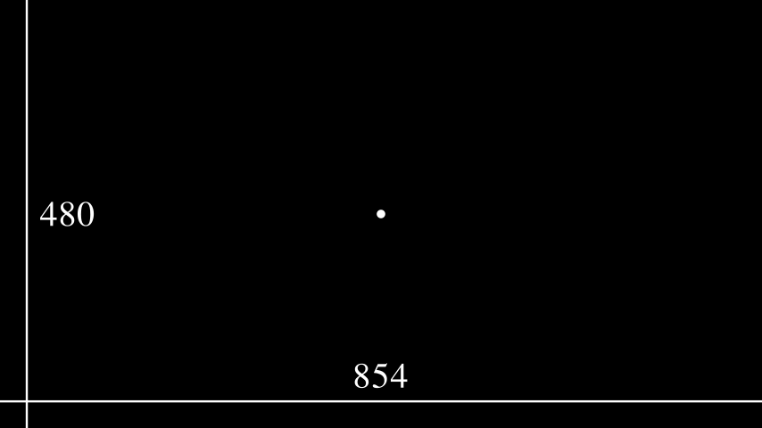

Configuration#
Manim provides an extensive configuration system that allows it to adapt to many different use cases. There are many configuration options that can be configured at different times during the scene rendering process. Each option can be configured programmatically via the ManimConfig class, at the time of command invocation via command-line arguments, or at the time the library is first imported via the config files.
The most common, simplest, and recommended way to configure Manim is via the command-line interface (CLI), which is described directly below.
Command-line arguments#
By far the most commonly used command in the CLI is the render command,
which is used to render scene(s) to an output file.
It is used with the following arguments:
Manim Community v0.15.2
Usage: manim render [OPTIONS] FILE [SCENE_NAMES]...
Render SCENE(S) from the input FILE.
FILE is the file path of the script or a config file.
SCENES is an optional list of scenes in the file.
...
However, since Manim defaults to the render command whenever no command
is specified, the following form is far more common and can be used instead:
manim [OPTIONS] FILE [SCENES]
An example of using the above form is:
manim -qm file.py SceneOne
This asks Manim to search for a Scene class called SceneOne inside the
file file.py and render it with medium quality (specified by the -qm flag).
Another frequently used flag is -p (“preview”), which makes manim
open the rendered video after it’s done rendering.
Note
The -p flag does not change any properties of the global
config dict. The -p flag is only a command-line convenience.
Advanced examples#
To render a scene in high quality, but only output the last frame of the scene instead of the whole video, you can execute
manim -sqh <file.py> SceneName
The following example specifies the output file name (with the -o
flag), renders only the first ten animations (-n flag) with a white
background (-c flag), and saves the animation as a .gif instead of as a
.mp4 file (--format=gif flag). It uses the default quality and does not try to
open the file after it is rendered.
manim -o myscene --format=gif -n 0,10 -c WHITE <file.py> SceneName
A list of all CLI flags#
$ manim --help
Manim Community v0.15.2
Usage: manim [OPTIONS] COMMAND [ARGS]...
Animation engine for explanatory math videos.
Options:
--version Show version and exit.
--help Show this message and exit.
Commands:
cfg Manages Manim configuration files.
init Sets up a new project in current working directory with default
settings.
It copies files from templates directory and pastes them in the
current working dir.
new Create a new project or insert a new scene.
plugins Manages Manim plugins.
render Render SCENE(S) from the input FILE.
See 'manim <command>' to read about a specific subcommand.
Made with <3 by Manim Community developers.
$ manim render --help
Manim Community v0.15.2
Usage: manim render [OPTIONS] FILE [SCENE_NAMES]...
Render SCENE(S) from the input FILE.
FILE is the file path of the script or a config file.
SCENES is an optional list of scenes in the file.
Global options:
-c, --config_file TEXT Specify the configuration file to use for
render settings.
--custom_folders Use the folders defined in the [custom_folders]
section of the config file to define the output
folder structure.
--disable_caching Disable the use of the cache (still generates
cache files).
--flush_cache Remove cached partial movie files.
--tex_template TEXT Specify a custom TeX template file.
-v, --verbosity [DEBUG|INFO|WARNING|ERROR|CRITICAL]
Verbosity of CLI output. Changes ffmpeg log
level unless 5+.
--notify_outdated_version / --silent
Display warnings for outdated installation.
--enable_gui Enable GUI interaction.
--gui_location TEXT Starting location for the GUI.
--fullscreen Expand the window to its maximum possible size.
--enable_wireframe Enable wireframe debugging mode in opengl.
--force_window Force window to open when using the opengl
renderer, intended for debugging as it may
impact performance
--dry_run Renders animations without outputting image or
video files and disables the window
Output options:
-o, --output_file TEXT Specify the filename(s) of the rendered
scene(s).
-0, --zero_pad INTEGER RANGE Zero padding for PNG file names. [0<=x<=9]
--write_to_movie Write the video rendered with opengl to a file.
--media_dir PATH Path to store rendered videos and latex.
--log_dir PATH Path to store render logs.
--log_to_file Log terminal output to file.
Render Options:
-n, --from_animation_number TEXT
Start rendering from n_0 until n_1. If n_1 is
left unspecified, renders all scenes after n_0.
-a, --write_all Render all scenes in the input file.
--format [png|gif|mp4|webm|mov]
-s, --save_last_frame
-q, --quality [l|m|h|p|k] Render quality at the follow resolution
framerates, respectively: 854x480 15FPS,
1280x720 30FPS, 1920x1080 60FPS, 2560x1440
60FPS, 3840x2160 60FPS
-r, --resolution TEXT Resolution in (W,H) for when 16:9 aspect ratio
isn't possible.
--fps, --frame_rate FLOAT Render at this frame rate.
--renderer [cairo|opengl] Select a renderer for your Scene.
--use_opengl_renderer Render scenes using OpenGL (Deprecated).
-g, --save_pngs Save each frame as png (Deprecated).
-i, --save_as_gif Save as a gif (Deprecated).
--save_sections Save section videos in addition to movie file.
-s, --save_last_frame Save last frame as png (Deprecated).
-t, --transparent Render scenes with alpha channel.
--use_projection_fill_shaders Use shaders for OpenGLVMobject fill which are
compatible with transformation matrices.
--use_projection_stroke_shaders
Use shaders for OpenGLVMobject stroke which are
compatible with transformation matrices.
Ease of access options:
--progress_bar [display|leave|none]
Display progress bars and/or keep them
displayed.
-p, --preview Preview the Scene's animation. OpenGL does a
live preview in a popup window. Cairo opens the
rendered video file in the system default media
player.
-f, --show_in_file_browser Show the output file in the file browser.
--jupyter Using jupyter notebook magic.
Other options:
--help Show this message and exit.
Made with <3 by Manim Community developers.
$ manim cfg --help
Manim Community v0.15.2
Usage: manim cfg [OPTIONS] COMMAND [ARGS]...
Manages Manim configuration files.
Options:
--help Show this message and exit.
Commands:
export
show
write
Made with <3 by Manim Community developers.
$ manim plugins --help
Manim Community v0.15.2
Usage: manim plugins [OPTIONS]
Manages Manim plugins.
Options:
-l, --list List available plugins.
--help Show this message and exit.
Made with <3 by Manim Community developers.
The ManimConfig class#
The most direct way of configuring Manim is through the global config object,
which is an instance of ManimConfig. Each property of this class is
a config option that can be accessed either with standard attribute syntax or
with dict-like syntax:
>>> from manim import *
>>> config.background_color = WHITE
>>> config["background_color"] = WHITE
Note
The former is preferred; the latter is provided for backwards compatibility.
Most classes, including Camera, Mobject, and
Animation, read some of their default configuration from the global
config.
>>> Camera({}).background_color
<Color white>
>>> config.background_color = RED # 0xfc6255
>>> Camera({}).background_color
<Color #fc6255>
ManimConfig is designed to keep internal consistency. For example,
setting frame_y_radius will affect frame_height:
>>> config.frame_height
8.0
>>> config.frame_y_radius = 5.0
>>> config.frame_height
10.0
The global config object is meant to be the single source of truth for all
config options. All of the other ways of setting config options ultimately
change the values of the global config object.
The following example illustrates the video resolution chosen for examples rendered in our documentation with a reference frame.
Example: ShowScreenResolution ¶
from manim import *
class ShowScreenResolution(Scene):
def construct(self):
pixel_height = config["pixel_height"] # 1080 is default
pixel_width = config["pixel_width"] # 1920 is default
frame_width = config["frame_width"]
frame_height = config["frame_height"]
self.add(Dot())
d1 = Line(frame_width * LEFT / 2, frame_width * RIGHT / 2).to_edge(DOWN)
self.add(d1)
self.add(Text(str(pixel_width)).next_to(d1, UP))
d2 = Line(frame_height * UP / 2, frame_height * DOWN / 2).to_edge(LEFT)
self.add(d2)
self.add(Text(str(pixel_height)).next_to(d2, RIGHT))
The config files#
As the last example shows, executing Manim from the command line may involve
using many flags simultaneously. This may become a nuisance if you must
execute the same script many times in a short time period, for example, when
making small incremental tweaks to your scene script. For this reason, Manim
can also be configured using a configuration file. A configuration file is a
file ending with the suffix .cfg.
To use a local configuration file when rendering your scene, you must create a
file with the name manim.cfg in the same directory as your scene code.
Warning
The config file must be named manim.cfg. Currently, Manim
does not support config files with any other name.
The config file must start with the section header [CLI]. The
configuration options under this header have the same name as the CLI flags
and serve the same purpose. Take, for example, the following config file.
[CLI]
# my config file
output_file = myscene
save_as_gif = True
background_color = WHITE
Config files are parsed with the standard python library configparser. In
particular, they will ignore any line that starts with a pound symbol #.
Now, executing the following command
manim -o myscene -i -c WHITE <file.py> SceneName
is equivalent to executing the following command, provided that manim.cfg
is in the same directory as <file.py>,
manim <file.py> SceneName
Tip
The names of the configuration options admissible in config files are
exactly the same as the long names of the corresponding command-
line flags. For example, the -c and --background_color flags
are interchangeable, but the config file only accepts
background_color as an admissible option.
Since config files are meant to replace CLI flags, all CLI flags can be set via a config file. Moreover, any config option can be set via a config file, whether or not it has an associated CLI flag. See the bottom of this document for a list of all CLI flags and config options.
Manim will look for a manim.cfg config file in the same directory as the
file being rendered, and not in the directory of execution. For example,
manim -o myscene -i -c WHITE <path/to/file.py> SceneName
will use the config file found in path/to/file.py, if any. It will not
use the config file found in the current working directory, even if it exists.
In this way, the user may keep different config files for different scenes or
projects, and execute them with the right configuration from anywhere in the
system.
The file described here is called the folder-wide config file because it affects all scene scripts found in the same folder.
The user config file#
As explained in the previous section, a manim.cfg config file only
affects the scene scripts in its same folder. However, the user may also
create a special config file that will apply to all scenes rendered by that
user. This is referred to as the user-wide config file, and it will apply
regardless of where Manim is executed from, and regardless of where the scene
script is stored.
The user-wide config file lives in a special folder, depending on the operating system.
Windows:
UserDirectory/AppData/Roaming/Manim/manim.cfgMacOS:
UserDirectory/.config/manim/manim.cfgLinux:
UserDirectory/.config/manim/manim.cfg
Here, UserDirectory is the user’s home folder.
Note
A user may have many folder-wide config files, one per folder, but only one user-wide config file. Different users in the same computer may each have their own user-wide config file.
Warning
Do not store scene scripts in the same folder as the user-wide config file. In this case, the behavior is undefined.
Whenever you use Manim from anywhere in the system, Manim will look for a user-wide config file and read its configuration.
Cascading config files#
What happens if you execute Manim and it finds both a folder-wide config file and a user-wide config file? Manim will read both files, but if they are incompatible, the folder-wide file takes precedence.
For example, take the following user-wide config file
# user-wide
[CLI]
output_file = myscene
save_as_gif = True
background_color = WHITE
and the following folder-wide file
# folder-wide
[CLI]
save_as_gif = False
Then, executing manim <file.py> SceneName will be equivalent to not
using any config files and executing
manim -o myscene -c WHITE <file.py> SceneName
Any command-line flags have precedence over any config file. For example,
using the previous two config files and executing manim -c RED
<file.py> SceneName is equivalent to not using any config files and
executing
manim -o myscene -c RED <file.py> SceneName
There is also a library-wide config file that determines Manim’s default behavior and applies to every user of the library. It has the least precedence, so any config options in the user-wide and any folder-wide files will override the library-wide file. This is referred to as the cascading config file system.
Warning
The user should not try to modify the library-wide file. Contributors should receive explicit confirmation from the core developer team before modifying it.
Order of operations#
With so many different ways of configuring Manim, it can be difficult to know when each config option is being set. In fact, this will depend on how Manim is being used.
If Manim is imported from a module, then the configuration system will follow these steps:
The library-wide config file is loaded.
The user-wide and folder-wide files are loaded if they exist.
All files found in the previous two steps are parsed in a single
ConfigParserobject, calledparser. This is where cascading happens.logging.Loggeris instantiated to create Manim’s globalloggerobject. It is configured using the “logger” section of the parser, i.e.parser['logger'].ManimConfigis instantiated to create the globalconfigobject.The
parserfrom step 3 is fed into theconfigfrom step 5 viaManimConfig.digest_parser().Both
loggerandconfigare exposed to the user.
If Manim is being invoked from the command line, all of the previous steps happen, and are complemented by:
The CLI flags are parsed and fed into
configviadigest_args().If the
--config_fileflag was used, a newConfigParserobject is created with the contents of the library-wide file, the user-wide file if it exists, and the file passed via--config_file. In this case, the folder-wide file, if it exists, is ignored.The new parser is fed into
config.The rest of the CLI flags are processed.
To summarize, the order of precedence for configuration options, from lowest to highest precedence is:
Library-wide config file,
user-wide config file, if it exists,
folder-wide config file, if it exists OR custom config file, if passed via
--config_file,other CLI flags, and
any programmatic changes made after the config system is set.
A list of all config options#
['aspect_ratio', 'assets_dir', 'background_color', 'background_opacity',
'bottom', 'custom_folders', 'disable_caching', 'dry_run',
'ffmpeg_loglevel', 'flush_cache', 'frame_height', 'frame_rate',
'frame_size', 'frame_width', 'frame_x_radius', 'frame_y_radius',
'from_animation_number', `fullscreen`, 'images_dir', 'input_file', 'left_side',
'log_dir', 'log_to_file', 'max_files_cached', 'media_dir', 'media_width',
'movie_file_extension', 'notify_outdated_version', 'output_file', 'partial_movie_dir',
'pixel_height', 'pixel_width', 'plugins', 'preview',
'progress_bar', 'quality', 'right_side', 'save_as_gif', 'save_last_frame',
'save_pngs', 'scene_names', 'show_in_file_browser', 'sound', 'tex_dir',
'tex_template', 'tex_template_file', 'text_dir', 'top', 'transparent',
'upto_animation_number', 'use_opengl_renderer', 'verbosity', 'video_dir',
'window_position', 'window_monitor', 'window_size', 'write_all', 'write_to_movie',
'enable_wireframe', 'force_window']